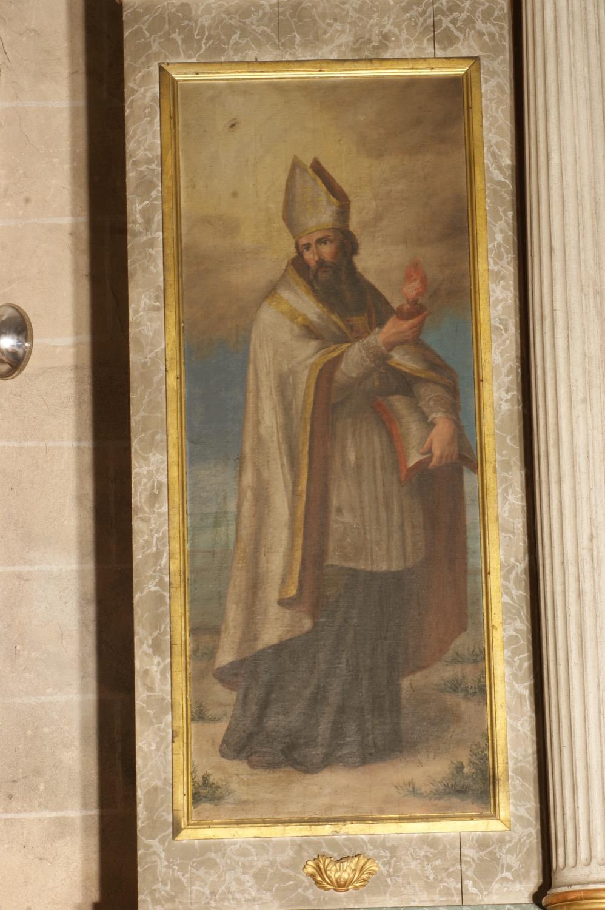

Sant Agustí (354-430) és un dels Pares de l’Església i un dels pensadors fonamentals de la cultura occidental. Nasqué a Tagaste, prop de la costa de l’actual Algèria. Sa mare, santa Mònica, era una cristiana devota però ell visqué una joventut dissipada: tengué un fill essent encara molt jove amb la que seria la seva concubina durant quinze anys i professà el maniqueisme, una antiga religió considerada herètica pels cristians.
Passada la trentena, mentre exercia de mestre de retòrica per a la cort imperial de Milà, es convertí al cristianisme gràcies a les oracions de sa mare i a la influència de sant Ambròs, bisbe de Milà. Abandonà la seva feina i tornà a Tagaste. Durant el viatge de retorn morí sa mare i poc després d’arribar també morí el seu fill. Llavors, Agustí vengué tot el seu patrimoni i repartí els doblers entre els pobres, excepte la casa familiar, on fundà una petita comunitat que feia vida austera seguint unes normes que ell mateix establí i que amb el temps es coneixerien com la regla de sant Agustí. Aquesta és justament la regla segons la qual viuen les canongeses de sant Agustí, orde a la qual va pertànyer santa Catalina Thomàs, titular d’aquesta capella.
Uns anys després va ser ordenat sacerdot i nomenat bisbe d’Hipona, també a l’actual Algèria, on continuà portant vida monàstica al palau episcopal. Va ser un predicador famós, escrigué nombrosos llibres i és considerat un dels grans erudits del cristianisme antic.
En aquesta pintura se’l representa amb mitra i vestidures episcopals sobre l’hàbit negre dels monjos agustinians. En una mà sosté un llibre, símbol del seu paper com a escriptor i Doctor de l’Església. En l’altra sosté un cor en flames que simbolitza el seu amor ardent per Déu i fa referència a diversos textos seus on l’esmenta. A la part superior de la pintura hi apareix l’ull de Déu, símbol tradicional de la providència divina, que ens recorda que la saviesa de sant Agustí no és només fruit de la seva intel·ligència i dels seus estudis, sinó també de la il·luminació divina.